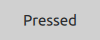
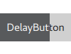
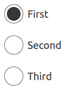
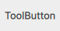

Button Controls
Qt Quick Controls offers a selection of button-like controls.
Abstract base type providing functionality common to buttons | |
Push-button that can be clicked to perform a command or answer a question | |
Check button that can be toggled on or off | |
Check button that triggers when held down long enough | |
Exclusive radio button that can be toggled on or off | |
A push-button control with rounded corners that can be clicked by the user | |
Button that can be toggled on or off | |
Button with a look suitable for a ToolBar |
Each type of button has its own specific use case. The following sections offer guidelines for choosing the appropriate type of button, depending on the use case.
Button Control
Button is a clickable control that starts an action, or opens or closes a popup. A button usually has a text label but it can also contain an icon.
Button is a very suitable control when a popup or dialog needs to perform an action. The most common examples are Apply, Cancel, Save, Close and Help.

Recommendations:
- The button's text should be a verb describing the action, or a noun matching the title of the popup that will be opened.
- Don't use a button to set state. Switch is more suitable for that.
- Use the default font unless you have UI guidelines specifying otherwise.
- If the text is localized, consider the influence of a longer text on the layout.
See also Button and AbstractButton
CheckBox Control

CheckBox is used to build multi-selection option lists. Any number of options can be selected, including none, but the options should not be mutually exclusive.
Use a single CheckBox for a yes/no choice, such as when you have to accept the terms of service agreement in a form.
For a single yes/no choice, it is also possible to use a switch. If the choice concerns an option, it is best to use a CheckBox. If it concerns action to be taken, a switch is recommended.
When options can be grouped, you can use a partially checked CheckBox to represent the whole group. Use the checkbox's partially checked state when a user selects some, but not all, sub-items in the group.
The three availables check states are: checked, partially checked and unchecked.
The checkable options are often listed vertically.
Recommendations:
- The checkbox label should be a statement that the check mark makes true, and that the absence of a check mark makes false.
- The checkbox label should not contain a negative statement.
- Use the default font, unless you have UI guidelines specifying otherwise.
- If the text is localized, consider the influence of a longer text on the layout.
See also CheckBox
DelayButton Control
DelayButton is a button that incorporates a delay before triggering an action. This delay prevents accidental presses.

Recommendations:
- Use in touch user interfaces.
- Use for actions that must be triggered with care.
See also Button and AbstractButton
RadioButton Control

RadioButton is used to select only one option from a set of options. Selecting one option automatically deselects the one selected before.
If there are only two mutually exclusive options, combine them into a single checkbox or a switch.
Recommendations:
- Limit the label text to one line.
- Ensure that a sensible default option is checked.
- List RadioButton options vertically.
- If the text is localized, consider the influence of a longer text on the layout.
- Use the default font, unless you have UI guidelines that specify otherwise.
- Just like with CheckBox, do not make the list too large.
- In order to avoid confusion, do not put two groups of radio buttons next to each other.
See also RadioButton
RoundButton Control
RoundButton is a clickable control that starts an action, or opens or closes a popup. A round button with a square image icon or one-letter font icon is circular. A circular RoundButton takes less space than a normal Button, and can also be used as a floating action button.

Recommendations:
- Keep labels short and concise.
- If the text is localized, consider the influence of a longer text on the layout.
See also RoundButton
Switch Control
Switch represents a physical switch that allows users to choose between an "on" or "off" state. Use a switch for binary operations that take effect immediately after it has been switched on. For example, a switch to turn WIFI on or off.
Recommendations:
- Keep labels short and concise.
- If the text is localized, consider the influence of a longer text on the layout.
See also Switch
ToolButton Control

ToolButton is nearly identical to Button, but it has a graphical appearance that makes it more suitable for insertion into a ToolBar.
See also ToolButton